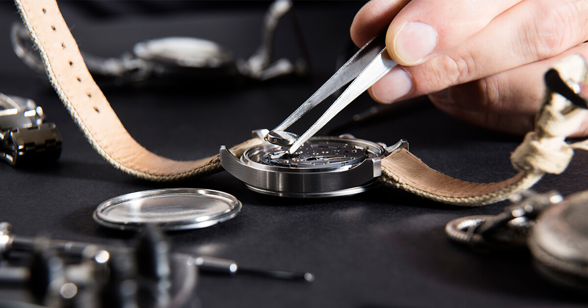
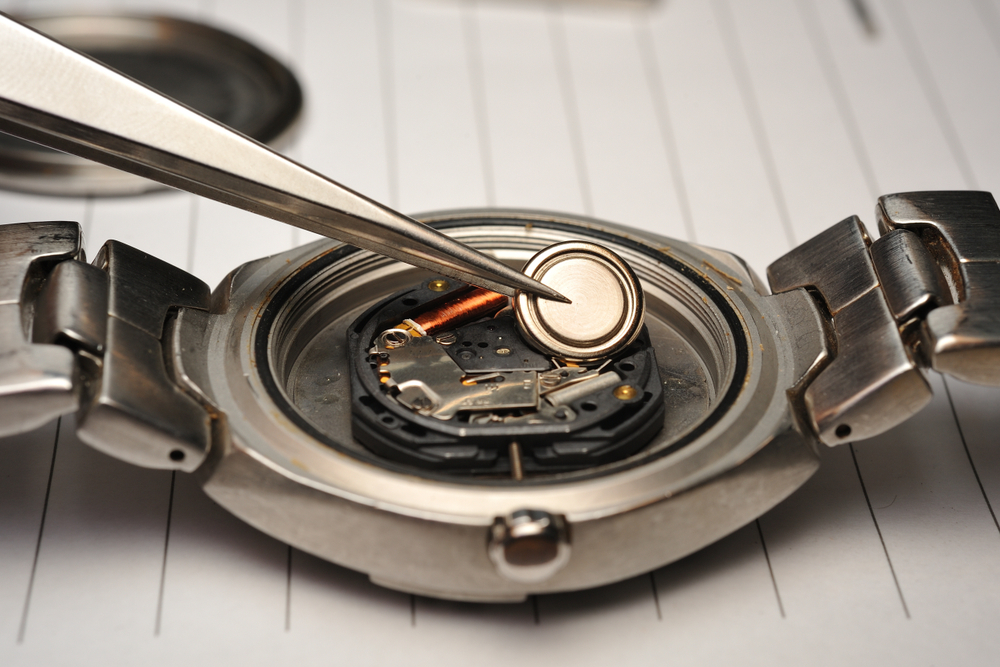
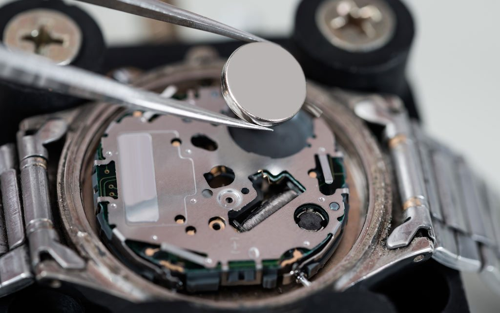
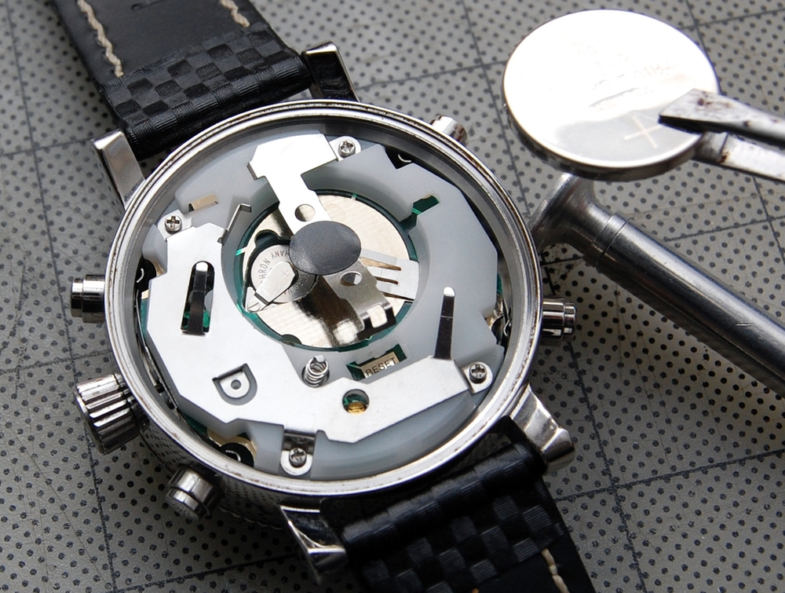
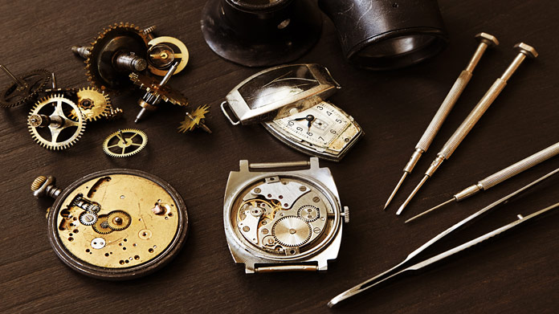
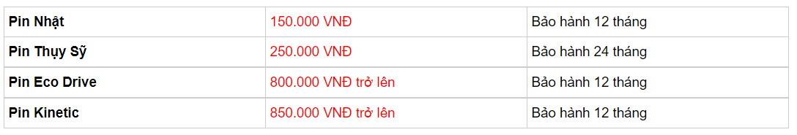
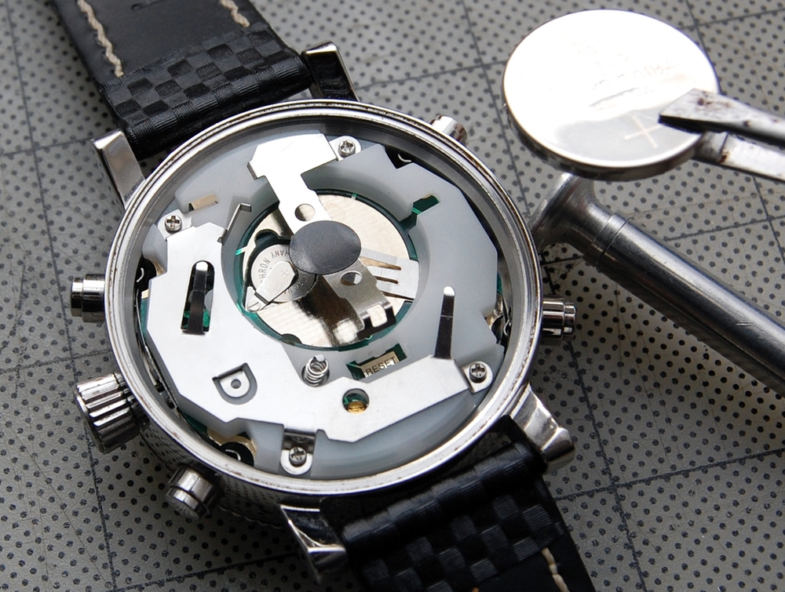
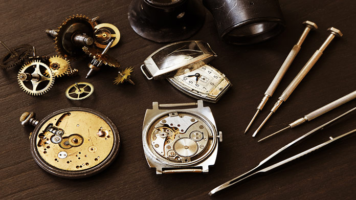
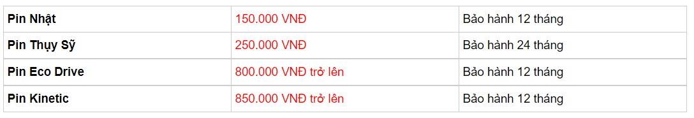

Thay pin đồng hồ là gì?
Đồng hồ gồm hai nhóm chính, chạy pin hoặc chạy cót. Những chiếc đồng hồ chạy pin, hay đồng hồ quartz có ưu điểm là luôn chính xác, sai số thấp, độ bền và ổn định cao. Về bản chất, pin đồng hồ sẽ tạo ra một môi trường từ trường để tinh thể thạch anh dao động trong đó. Nhưng một nhược điểm nhỏ của những mẫu đồng hồ này khi hết pin, quý khách sẽ cần sử dụng dịch vụ thay pin đồng hồ để đồng hồ có thể có được năng lượng để có thể tiếp tục hoạt động.

Hiện nay trên thị trường có các loại pin sau để thay pin đồng hồ: pin kiềm, chất lượng thấp, chỉ có thể dùng khoảng 1 năm là kiệt. Chất lượng pin silver oxide tuy có cao hơn nhưng cũng chỉ có kéo dài khoảng 2 năm. Nước Nhật với những thành công vượt bậc cũng giới thiệu tới các tín đồ của các cỗ máy thời gian Eco-Drive chạy pin nhưng “sạc” bằng năng lượng ánh sáng. Theo một số thống kê không chính thức, tuổi thọ của những chiếc đồng hồ này kéo dài từ 6-8 năm.

Nguồn gốc của pin đồng hồ
Nhật Bản: Siêu bền, siêu chất
Trung Quốc: Độ bền thấp, hoạt động không ổn định, có trường hợp 3-6 tháng đã hết pin. Có thể gây ảnh hưởng tới cỗ máy của đồng hồ… Thường được sử dụng ở các cơ sở không đảm bảo chất lượng.
Nhận biết khi nào cần thay pin
Những dấu hiệu rõ nhất để nhận biết đã đến lúc cần thay pin là…
– Kim giây nhảy cách đoạn 3 đến 5 giây.
– Đồng hồ chạy nhanh chậm bất thường.
– Đồng hồ ngừng chạy. Trường hợp có thể có hai nguyên nhân là đồng hồ hết pin hoặc IC gặp vấn đề.
Chi phí thay pin
Câu trả lời của chúng tôi cho dịch vụ thay pin là tùy thuộc vào mẫu đồng hồ của bạn. Mức tùy thuộc này sẽ dựa theo rất nhiều tham chiếu khác nhau từ thương hiệu đồng hồ tới loại pin được sử dụng. Tuy nhiên, nếu ở mức phổ thông, thay pin cho một chiếc đồng hồ quartz sẽ có giá từ 100-200.000, tùy thuộc vào chất lược pin. Với mẫu đồng hồ Eco-Drive, thay pin khoảng 700.000. Riêng với đồng hồ Kinetic (hay còn được biết tới với cái tên đồng hồ hybrid, cơ và quart kết hợp hai trong một), thay pin giá tối thiểu phải trên 800.000 do đây là pin hiếm.

Quy trình thay pin đồng hồ chuẩn Thụy Sỹ 15 Phút
ONETIME.VN nổi tiếng là luôn áp dụng chuẩn Thụy Sỹ cho mỗi dịch vụ sửa chữa đồng hồ. Và thay pin cũng không phải ngoại lệ. Ở tại trung tâm có thiết kế sạch và chuyên nghiệp như một phòng thí nghiệm của chúng tôi, các bước thay pin chuẩn Thụy Sỹ, kéo dài trong 15 phút diễn ra như sau.
1. Đầu tiên, khi nhận đồng hồ thay pin, chúng tôi sẽ vệ sinh vỏ máy bằng dụng cụ chuyên dụng. Mục đích của việc này là để đảm bảo bụi bẩn không bay vào máy khi mở đáy để thay pin.
2. Mặc dù có thể là thừa, nhưng ONETIME.VN luôn kiểm tra lượng điện còn ở những viên cũ để có thể tìm được đúng bệnh cho mỗi chiếc đồng hồ.
3. Để cho những viên pin có thể hoạt động tốt nhất, chúng tôi luôn tiến hành vệ sinh sạch sẽ các bản cực cách điện.
4. Chúng tôi cũng luôn kiểm tra đảm bảo IC của đồng hồ còn hoạt động tốt. Ngoài ra, các bước như làm sạch núm, bảo dưỡng gioăng cũng được tiến hành.
5. Bước kế tiếp là thay pin theo đúng yêu cầu phù hợp.
6. Mỗi chiếc đồng hồ được ONETIME.VN trước khi được mang ra khỏi phòng sửa chữa đều phải đảm bảo hoạt động tốt cũng như có độ chống thấm nước hoàn hảo nhờ quá trình đóng nắp đáy chuyên nghiệp. Hiện nay dịch vụ thay pin của ONETIME.VN đang được bảo hành là 18 tháng,
Những Chú Ý Khi Thay Pin
– Thay đúng loại và đúng mã pin cho từng đồng hồ
– Dùng pin chính hãng để đảm bảo thời gian hoạt động, độ ổn định và sự bền bỉ cho máy đồng hồ
– Thay pin ở địa uy tín, chuyên nghiệp
– Chỉ thay pin ở địa chỉ có phòng sửa chữa sạch sẽ để đảm bảo bụi bẩn không tích vào đồng hồ, gây kẹt bánh răng


Những dấu hiệu rõ nhất để nhận biết đã đến lúc cần thay pin là…
– Kim giây nhảy cách đoạn 3 đến 5 giây.
– Đồng hồ chạy nhanh chậm bất thường.
– Đồng hồ ngừng chạy. Trường hợp có thể có hai nguyên nhân là đồng hồ hết pin hoặc IC gặp vấn đề.
Chi phí thay pin
Câu trả lời của chúng tôi cho dịch vụ thay pin là tùy thuộc vào mẫu đồng hồ của bạn. Mức tùy thuộc này sẽ dựa theo rất nhiều tham chiếu khác nhau từ thương hiệu đồng hồ tới loại pin được sử dụng. Tuy nhiên, nếu ở mức phổ thông, thay pin cho một chiếc đồng hồ quartz sẽ có giá từ 100-200.000, tùy thuộc vào chất lược pin. Với mẫu đồng hồ Eco-Drive, thay pin khoảng 700.000. Riêng với đồng hồ Kinetic (hay còn được biết tới với cái tên đồng hồ hybrid, cơ và quart kết hợp hai trong một), thay pin giá tối thiểu phải trên 800.000 do đây là pin hiếm.

Quy trình thay pin đồng hồ chuẩn Thụy Sỹ 15 Phút
ONETIME.VN nổi tiếng là luôn áp dụng chuẩn Thụy Sỹ cho mỗi dịch vụ sửa chữa đồng hồ. Và thay pin cũng không phải ngoại lệ. Ở tại trung tâm có thiết kế sạch và chuyên nghiệp như một phòng thí nghiệm của chúng tôi, các bước thay pin chuẩn Thụy Sỹ, kéo dài trong 15 phút diễn ra như sau.
1. Đầu tiên, khi nhận đồng hồ thay pin, chúng tôi sẽ vệ sinh vỏ máy bằng dụng cụ chuyên dụng. Mục đích của việc này là để đảm bảo bụi bẩn không bay vào máy khi mở đáy để thay pin.
2. Mặc dù có thể là thừa, nhưng ONETIME.VN luôn kiểm tra lượng điện còn ở những viên cũ để có thể tìm được đúng bệnh cho mỗi chiếc đồng hồ.
3. Để cho những viên pin có thể hoạt động tốt nhất, chúng tôi luôn tiến hành vệ sinh sạch sẽ các bản cực cách điện.
4. Chúng tôi cũng luôn kiểm tra đảm bảo IC của đồng hồ còn hoạt động tốt. Ngoài ra, các bước như làm sạch núm, bảo dưỡng gioăng cũng được tiến hành.
5. Bước kế tiếp là thay pin theo đúng yêu cầu phù hợp.
6. Mỗi chiếc đồng hồ được ONETIME.VN trước khi được mang ra khỏi phòng sửa chữa đều phải đảm bảo hoạt động tốt cũng như có độ chống thấm nước hoàn hảo nhờ quá trình đóng nắp đáy chuyên nghiệp. Hiện nay dịch vụ thay pin của ONETIME.VN đang được bảo hành là 18 tháng,
Những Chú Ý Khi Thay Pin
– Thay đúng loại và đúng mã pin cho từng đồng hồ
– Dùng pin chính hãng để đảm bảo thời gian hoạt động, độ ổn định và sự bền bỉ cho máy đồng hồ
– Thay pin ở địa uy tín, chuyên nghiệp
– Chỉ thay pin ở địa chỉ có phòng sửa chữa sạch sẽ để đảm bảo bụi bẩn không tích vào đồng hồ, gây kẹt bánh răng

